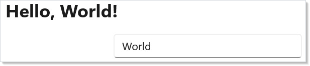
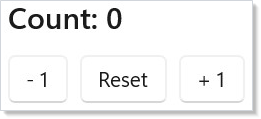
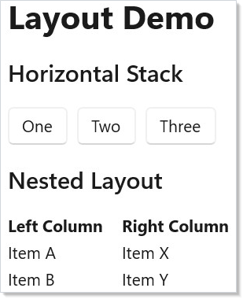
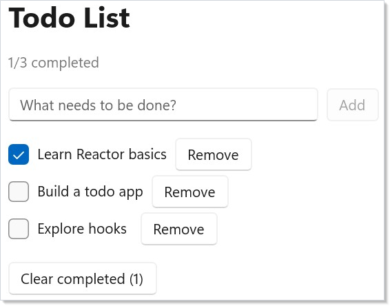
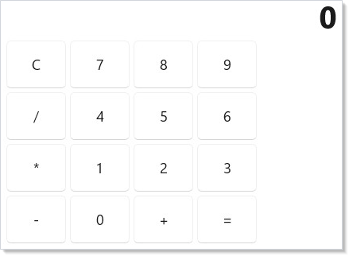

A Microsoft.UI.Reactor (Reactor) app is a tree of components driven by
hooks, hosted in a WinUI window that the framework opens and
manages for you. You write one C# file, call ReactorApp.Run<T>, and your
component's Render() method returns the element tree that becomes the
native control tree. State lives in UseState and friends; every setter
invocation re-runs Render(); the reconciler diffs the new tree against
the previous one and patches the WinUI controls in place. This page is
the bootstrap walkthrough — installing the framework, scaffolding a
project, and growing from hello-world to a todo list and a calculator.
By the end you will have run code, seen a screenshot of each step, and
recognized the layout primitives and hooks that
the rest of the docset elaborates.
Getting Started with Reactor¶
Prerequisites: .NET 10+ and the Windows App SDK.
Public preview package available. Reactor ships
Microsoft.UI.Reactor0.1.0-preview.16on NuGet.org, and the project templates ship in the official Windows App SDKdotnet newpack (Microsoft.WindowsAppSDK.WinUI.CSharp.Templates) — sodotnet new reactorworks from a plain .NET SDK install, no source checkout required.bootstrap.ps1is for contributors: it installsmur, packs source-built framework snapshots, and registers those same templates. Broader signed distribution is tracked in spec 022.
Reactor is a declarative UI framework for building native Windows apps in pure C#. No XAML, no data binding, no view models. You describe your UI as a function of state and Reactor keeps the screen in sync.
Prefer Rust? The same declarative WinUI idea is available in Rust through windows-reactor, a separate library in windows-rs built around components and typed messages, available on crates.io. This guide covers Microsoft.UI.Reactor, the C# library.
Setup¶
If you just want to build an app, scaffold one and go — you do not need to clone this repo:
winapp is the Windows App SDK CLI. winapp new installs the template pack on
demand (and offers to update a stale one), so there is no separate install step
and no version to pin.
That gives you four starting points — reactor (blank), reactor-mvu
(Model-View-Update via UseReducer), reactor-navview (NavigationView shell)
and reactor-tabview (TabView shell). winapp new --list prints them all, and
omitting -t picks one interactively.
Prefer plain .NET tooling? Install the pack yourself, then scaffold with
dotnet new:
dotnet new install Microsoft.WindowsAppSDK.WinUI.CSharp.Templates::<version>
dotnet new reactor -n MyApp
The pack is prerelease-only today, and dotnet new install resolves stable
versions unless you pin one explicitly — which is the step winapp new removes.
Scaffolded apps are packaged (single-project MSIX), so dotnet run
registers a loose-layout package and launches the app with full package
identity — the same thing F5 does in Visual Studio. That requires Developer
Mode (Settings → System → For developers). See Packaging for
the unpackaged alternative.
One file, no project¶
A Reactor app does not need a .csproj. .NET 10 runs a single .cs file
directly, and file-level #: directives supply the configuration a project file
otherwise would:
#:package Microsoft.UI.Reactor@0.1.0-preview.16
#:package Microsoft.Windows.SDK.BuildTools.WinApp@0.7.0
#:property OutputType=WinExe
#:property TargetFramework=net10.0-windows10.0.22621.0
#:property UseWinUI=true
using Microsoft.UI.Reactor;
using Microsoft.UI.Reactor.Core;
using static Microsoft.UI.Reactor.Factories;
ReactorApp.Run<MyApp>("Hello Reactor");
class MyApp : Component
{
public override Element Render()
{
var (count, setCount) = UseState(0);
return VStack(
Heading($"Count: {count}"),
HStack(8,
Button("-", () => setCount(count - 1)),
Button("+", () => setCount(count + 1))
)
);
}
}
Save it as counter.cs and run it:
That is the whole app — one file, no scaffolding, no build output to manage.
It is the fastest way to try an idea, reproduce a bug, or paste a complete
runnable example into an issue. Like a scaffolded app, it runs packaged:
Microsoft.Windows.SDK.BuildTools.WinApp makes dotnet run synthesize an
appxmanifest from the #:property values, register the app, and launch it with
package identity, which needs Developer Mode. If you have the
winapp CLI 0.7.0 or later,
winapp run counter.cs does the same.
Microsoft.UI.Reactor brings the Windows App SDK in transitively, exactly as in
the minimal .csproj. The rest of the header:
| Directive | Why it is required |
|---|---|
Microsoft.Windows.SDK.BuildTools.WinApp |
Lets dotnet run package the app. It carries its own copy of the winapp CLI, so that does not need installing. Without it, plain dotnet run cannot package the app, and it dies at startup with COMException … REGDB_E_CLASSNOTREG — an error that says nothing about the missing package — unless you run it unpackaged (below). |
OutputType=WinExe |
Links the app for the Windows GUI subsystem. Without it the build still succeeds, but the .exe is a console binary, so Windows opens a console window alongside your UI for as long as the app runs. |
TargetFramework=net10.0-windows10.0.22621.0 |
Reactor ships net10.0-windows10.0.22621. A lower Windows version compiles against nothing and you get CS0234: the namespace 'Reactor' does not exist, as if the package were missing. |
UseWinUI=true |
Brings in the WinUI 3 targets. |
Running it unpackaged¶
WindowsPackageType decides whether the app runs packaged, and dotnet run and
winapp run both obey it. Declare the app unpackaged to run it as a plain .exe:
An unpackaged app has no package identity, so Package.Current and ms-appx:
URIs are unavailable.
Either way the app is framework-dependent: it uses the Windows App Runtime
installed on the machine. To carry it with the app instead, add
#:property WindowsAppSDKSelfContained=true. That mode also needs the
architecture named with -r win-x64 or -r win-arm64, because the runtime it
copies is native code built separately for each CPU — -r on its own does not
bundle anything.
Contributor setup (one-time)¶
Working on Reactor rather than with it? Clone and bootstrap:
git clone https://github.com/microsoft/microsoft-ui-reactor.git
cd microsoft-ui-reactor
./bootstrap.ps1
bootstrap.ps1 packs and installs mur as a dotnet tool global
install (so it's on PATH cross-shell with no manual $env:Path edits), runs
mur pack-local to produce local source-built framework snapshots, installs the
Windows App SDK template pack,
and drops the Reactor agent plugin under ~/.claude/plugins/reactor
(symlink when allowed, copy otherwise).
After git pull¶
The source checkout changes — your local framework snapshots, CLI and plugin do not, unless you repack them. Two options:
mur upgrade # repacks the framework and refreshes the plugin
./bootstrap.ps1 # same, plus the `mur` global tool and the template pack
mur upgrade is the lightweight path. Re-run bootstrap.ps1 when you want to
pick up CLI changes (a mur process can't replace its own binary mid-run).
The dotnet new reactor templates are not repacked by either: they ship in the
Windows App SDK pack, so git pull never invalidates them. mur upgrade only
checks that they still resolve; bootstrap.ps1 installs the pack when it is
missing, and winapp new --list --template-version latest updates it.
Verify the install¶
Lists every dependency the rest of this guide assumes — .NET 10+ SDK, mur on
PATH, current local-nupkgs/ developer feed, the dotnet new reactor template
registration, and the optional Claude plugin. Each line is PASS / WARN / FAIL
with a one-line remediation for anything broken.
What this gets you. A globally-resolvable
mur(via~/.dotnet/tools), thedotnet new reactortemplates, a local NuGet feed at<repo>/local-nupkgs/for source-built smoke tests, and an agent plugin so AI assistants generate against the real factories (mur --skill/mur --apiprint the same content). Runmur upgradewhenever you pull new CLI, plugin, or framework changes.Only need the framework package? Reference the published
Microsoft.UI.Reactorpackage directly from NuGet.org. Run the bootstrap only when you want the local project template, themurCLI, or the agent plugin from this source checkout.
Manual setup¶
If you'd rather not run bootstrap.ps1, here is exactly what it does, step
by step. Every command is a stock dotnet or git invocation — no Reactor
tooling required until the very last step, where you build mur from source
and install it as a global tool. Each block below corresponds to a numbered
phase in bootstrap.ps1, so the script is a useful cross-reference if
anything goes wrong.
| # | Step | What it produces |
|---|---|---|
| 1 | dotnet --list-sdks |
Confirms .NET 10+ is installed |
| 2 | git clone + cd |
Local source checkout |
| 3 | dotnet pack src/Reactor.Cli |
Microsoft.UI.Reactor.Cli.<ver>.nupkg in local-nupkgs/ |
| 4 | dotnet tool install -g |
mur resolvable cross-shell from ~/.dotnet/tools |
| 5 | mur pack-local |
Source-built framework snapshots in local-nupkgs/ |
| 6 | dotnet new install |
dotnet new reactor templates registered |
| 7 | Symlink/copy plugins/reactor |
Reactor agent kit under ~/.claude/plugins/reactor (optional) |
| 8 | mur doctor |
Verification that 1–7 all stuck |
1. Confirm prerequisites. Reactor requires .NET 10 or later. The Windows App SDK is pulled in transitively when the framework builds.
2. Clone and enter the repo. Everything below assumes the working directory is the repo root.
3. Pack mur as a global-tool nupkg. Reactor.Cli.csproj sets
PackAsTool=true, so dotnet pack produces a tool package. The
-p:Platform flag matters because the build step runs the SignaturesGen
apphost to refresh skills/reactor.api.txt; that apphost must match the
host architecture.
$hostArch = if ($env:PROCESSOR_ARCHITECTURE -eq 'ARM64') { 'ARM64' } else { 'x64' }
dotnet pack src/Reactor.Cli/Reactor.Cli.csproj `
-c Release `
"-p:Platform=$hostArch" `
-o local-nupkgs `
--nologo
# Produces local-nupkgs/Microsoft.UI.Reactor.Cli.<version>.nupkg
4. Install mur as a dotnet global tool. This is what puts mur on
PATH cross-shell with no $env:Path edits. If a previous install exists,
use update instead of install.
dotnet tool install -g `
--add-source ./local-nupkgs `
Microsoft.UI.Reactor.Cli `
--no-cache --ignore-failed-sources
# If `mur` was already installed:
# dotnet tool update -g --add-source ./local-nupkgs Microsoft.UI.Reactor.Cli --no-cache --ignore-failed-sources
dotnet tool install -g adds ~/.dotnet/tools to the user PATH, which
the current shell does not automatically inherit. For this session only,
prepend it manually so the next step finds mur:
New PowerShell windows pick up the user-PATH change on their own.
5. Pack local framework snapshots. This produces the source-built
0.0.0-local framework nupkgs so recipes and smoke tests in this clone resolve
your working tree instead of the published package.
mur pack-local
# Produces:
# local-nupkgs/Microsoft.UI.Reactor.0.0.0-local.nupkg
# local-nupkgs/Microsoft.UI.Reactor.Advanced.0.0.0-local.nupkg
# local-nupkgs/Microsoft.UI.Reactor.Devtools.0.0.0-local.nupkg
If you'd rather not depend on the freshly-installed mur, you can invoke
the source project directly:
dotnet run --project src/Reactor.Cli/Reactor.Cli.csproj `
-c Release "-p:Platform=$hostArch" -- pack-local
6. Install the dotnet new reactor templates. These come from the Windows
App SDK template pack on NuGet.org, not from this checkout:
The pack is prerelease-only today, so pin a version explicitly — a bare
dotnet new install resolves stable versions only. winapp new -t reactor
collapses both steps: it installs the newest pack on demand, then scaffolds.
7. (Optional) Install the Reactor agent plugin. If you use Claude Code or another agent and want it to author Reactor code with the right factories, drop the in-repo plugin folder into your agent's plugin path. A symlink is preferred so edits in the checkout are immediately visible; a copy works when you can't create symlinks (Developer Mode off + non-admin shell).
$pluginSrc = (Resolve-Path "plugins/reactor").Path
$pluginDst = "$env:USERPROFILE\.claude\plugins\reactor"
New-Item -ItemType Directory -Path (Split-Path $pluginDst) -Force | Out-Null
if (Test-Path $pluginDst) { Remove-Item $pluginDst -Recurse -Force }
try {
New-Item -ItemType SymbolicLink -Path $pluginDst -Target $pluginSrc -ErrorAction Stop | Out-Null
} catch {
Copy-Item $pluginSrc $pluginDst -Recurse -Force
}
For Copilot CLI or other agents, follow that tool's plugin-install path and
point it at <repo>/plugins/reactor.
8. Verify. mur doctor performs the same checks the bootstrap script's
final stage relies on — SDK version, mur resolvability, local developer
nupkgs present, template registered, and plugin installed.
Refreshing after git pull¶
Without the bootstrap script, repeat steps 5 and 6 after every pull —
the framework nupkg and the template both need to be regenerated against
the new source. Repeat steps 3 and 4 only when src/Reactor.Cli/
itself changes (a running mur process cannot replace its own binary, so
the install must happen from a shell that isn't already running mur).
Why a global tool instead of just running from
bin/<arch>/? Both work. The repo's CLI csproj still mirrorsmur.exetobin/<arch>/after every build for the legacy PATH layout. The global-tool install is just the friendliest default — it putsmuron PATH cross-shell, cross-CWD, with no arch-aware PATH munging, anddotnet tool update -gbecomes the upgrade verb.Caveat: The Reactor templates ship in the Windows App SDK
dotnet newpack (Microsoft.WindowsAppSDK.WinUI.CSharp.Templates), sodotnet new reactorneeds no source checkout. If it's missing,winapp new -t reactorinstalls the pack on demand and scaffolds in one step. To install it without scaffolding, rundotnet new install Microsoft.WindowsAppSDK.WinUI.CSharp.Templates::<version>— the pack is prerelease-only today, so the explicit version pin is required.
Creating a Project¶
With the templates installed, scaffold a new app from anywhere on disk:
The template wires up the Microsoft.UI.Reactor package reference, the
WinUI 3 target framework, MSIX packaging, and a working App.cs that mounts a
single Reactor component. No App.xaml, no MainWindow.xaml.cs — just one C#
file. Swap reactor for reactor-mvu, reactor-navview or reactor-tabview
to start from a richer shell.
For local framework smoke tests, generate with
dotnet new reactor -n MyLocalApp --reactor-version 0.0.0-local and run
from inside the source checkout or another folder that has the local feed
configured.
Why a custom template? A
dotnet new consoledoes not produce a WinUI app — it builds a console target with no UI thread, noOutputType=WinExe, no WindowsAppSDK reference, and no[STAThread]entry point.reactorsets all of those plus the Reactor package reference, MSIX packaging and a backdrop-aware root component, so you get a window on firstdotnet runinstead of a console-host stub.
Your First App¶
The template's App.cs is the canonical hello-world. Replace its contents
with the snippet below to match the rest of this guide (the template
defaults to a slightly richer starter; the simpler form is easier to walk
through):
using Microsoft.UI.Reactor;
using Microsoft.UI.Reactor.Core;
using static Microsoft.UI.Reactor.Factories;
using Microsoft.UI.Xaml;
ReactorApp.Run<GettingStartedApp>("Getting Started");
class GettingStartedApp : Component
{
public override Element Render()
{
var (name, setName) = UseState("World");
return VStack(16,
TextBlock($"Hello, {name}!").FontSize(24).Bold(),
TextBox(name, setName, placeholderText: "Enter your name")
.AutomationName("Name")
.Width(250)
).Padding(24);
}
}
Run it with dotnet run and you'll see this:

Here's what's happening:
ReactorApp.Run<T>launches a window and mounts your root component.- Devtools support is enabled by the app project's
Reactor.DevtoolsSupportswitch, not by aRunparameter. The doc apps inherit that switch fromdocs/_pipeline/apps/Directory.Build.propsso the screenshot pipeline can launch them with--devtools; real apps usually make the switch Debug-only so release builds stay trimmed. UseStatereturns the current value and a setter. When you call the setter, Reactor re-renders the component with the new value.VStackstacks children vertically. The number16is the pixel spacing.TextBlock(...).FontSize(24).Bold()is the fluent modifier pattern — every element supports chainable modifiers for styling and layout.
Type in the text box and the greeting updates instantly. There's no event wiring or property notification — just state in, UI out.
Understanding State¶
Every interactive UI needs state. In Reactor, UseState is the primary hook for
managing values that change over time.
Counter Example¶
Here's a counter that tracks a single number:
// Launch with:
// ReactorApp.Run<CounterExample>("Counter");
class CounterExample : Component
{
public override Element Render()
{
var (count, setCount) = UseState(0);
return VStack(12,
TextBlock($"Count: {count}").FontSize(20).SemiBold(),
HStack(8,
Button("- 1", () => setCount(count - 1)),
Button("Reset", () => setCount(0)),
Button("+ 1", () => setCount(count + 1))
)
).Padding(24);
}
}

Each call to setCount triggers a re-render. Reactor diffs the old and new
element trees and updates only the WinUI controls that actually changed.
Multiple State Values¶
Components can call UseState multiple times — each call tracks an independent
value:
// Launch with:
// ReactorApp.Run<MultipleStateExample>("Multiple State");
class MultipleStateExample : Component
{
public override Element Render()
{
var (firstName, setFirstName) = UseState("");
var (lastName, setLastName) = UseState("");
var (fontSize, setFontSize) = UseState(16.0);
var fullName = string.IsNullOrWhiteSpace(firstName) && string.IsNullOrWhiteSpace(lastName)
? "Anonymous"
: $"{firstName} {lastName}".Trim();
return VStack(12,
TextBlock($"Hello, {fullName}!").FontSize(fontSize).Bold(),
TextBox(firstName, setFirstName, placeholderText: "First name")
.AutomationName("First name")
.Width(200),
TextBox(lastName, setLastName, placeholderText: "Last name")
.AutomationName("Last name")
.Width(200),
HStack(8,
TextBlock("Font size:"),
Slider(fontSize, 10, 40, setFontSize).Width(200),
TextBlock($"{fontSize:F0}px")
)
).Padding(24);
}
}
The fullName variable is derived from firstName and lastName on every
render. In Reactor, you don't need computed properties or bindings — plain C#
expressions work because Render() runs every time state changes.
Layout Basics¶
Reactor provides a small set of layout primitives that compose together:
// Launch with:
// ReactorApp.Run<LayoutBasicsExample>("Layout");
class LayoutBasicsExample : Component
{
public override Element Render()
{
return VStack(16,
Heading("Layout Demo"),
SubHeading("Horizontal Stack"),
HStack(8,
Button("One"),
Button("Two"),
Button("Three")
),
SubHeading("Nested Layout"),
HStack(16,
VStack(4,
TextBlock("Left Column").Bold(),
TextBlock("Item A"),
TextBlock("Item B")
),
VStack(4,
TextBlock("Right Column").Bold(),
TextBlock("Item X"),
TextBlock("Item Y")
)
)
).Padding(24);
}
}

| Element | Purpose |
|---|---|
VStack |
Vertical stack (children top to bottom) |
HStack |
Horizontal stack (children left to right) |
Grid |
Row/column grid with proportional sizing |
ScrollView |
Scrollable wrapper for overflow content |
Border |
Container with background, corner radius, stroke |
All layout elements accept an optional spacing parameter as their first
argument: VStack(12, child1, child2) adds 12px between children.
Building a Todo App¶
Let's put these pieces together into something real. A todo app needs a list of items, a way to add new ones, and checkboxes to mark them done.
First, define a simple record for items:
Now the full component:
using Microsoft.UI.Reactor;
using Microsoft.UI.Reactor.Core;
using static Microsoft.UI.Reactor.Factories;
using Microsoft.UI.Xaml;
ReactorApp.Run<TodoApp>("Todo App");
class TodoApp : Component
{
public override Element Render()
{
var initialItems = UseMemo(() => new List<TodoItem>
{
new("todo-1", "Learn Reactor basics", true),
new("todo-2", "Build a todo app", false),
new("todo-3", "Explore hooks", false),
});
var (items, updateItems) = UseReducer(initialItems);
var (newText, setNewText) = UseState("");
var (nextId, setNextId) = UseState(4);
var doneCount = items.Count(i => i.Done);
return VStack(16,
Heading("Todo List"),
TextBlock($"{doneCount}/{items.Count} completed").Opacity(0.6),
// Input row
HStack(8,
TextBox(newText, setNewText, placeholderText: "What needs to be done?")
.AutomationName("New todo")
.Width(300),
Button("Add", () =>
{
if (!string.IsNullOrWhiteSpace(newText))
{
var text = newText.Trim();
updateItems(list => [.. list, new TodoItem($"todo-{nextId}", text, false)]);
setNextId(nextId + 1);
setNewText("");
}
}).IsEnabled(!(string.IsNullOrWhiteSpace(newText)))
),
// Item list
VStack(4,
items.Select((item, _) =>
HStack(8,
CheckBox(item.Done, done =>
updateItems(list =>
{
var copy = new List<TodoItem>(list);
var itemIndex = copy.FindIndex(i => i.Id == item.Id);
if (itemIndex >= 0)
copy[itemIndex] = item with { Done = done };
return copy;
}),
label: item.Text
),
Button("Remove", () =>
updateItems(list =>
{
var copy = new List<TodoItem>(list);
copy.RemoveAll(i => i.Id == item.Id);
return copy;
})
).AutomationName($"Remove {item.Text}")
).WithKey(item.Id)
).ToArray()
),
// Clear completed button
When(doneCount > 0, () =>
Button($"Clear completed ({doneCount})", () =>
updateItems(list => list.Where(i => !i.Done).ToList())
).AutomationName("Clear completed todos")
)
).Padding(24);
}
}

Key patterns to notice:
UseReduceris likeUseStatebut the setter receives a functionFunc<T, T>— you transform the previous value into the next value. This is the right tool when your new state depends on the old state (like appending to a list).items.Select(...).ToArray()maps data into elements. Reactor reconciles the list efficiently using keys.WithKeygives each item a stable identity so Reactor can reorder, add, and remove items without rebuilding the entire list.When(condition, () => element)conditionally renders content without an if/else cluttering the tree.
Building a Calculator¶
Here's a more complex example that manages multiple pieces of related state:
using Microsoft.UI.Reactor;
using Microsoft.UI.Reactor.Core;
using static Microsoft.UI.Reactor.Factories;
using Microsoft.UI.Xaml;
ReactorApp.Run<CalculatorApp>("Calculator");
class CalculatorApp : Component
{
public override Element Render()
{
var (display, setDisplay) = UseState("0");
var (operand, setOperand) = UseState<double?>(null);
var (op, setOp) = UseState<string?>(null);
var (resetNext, setResetNext) = UseState(false);
void PressDigit(string digit)
{
if (resetNext || display == "0")
{
setDisplay(digit);
setResetNext(false);
}
else
{
setDisplay(display + digit);
}
}
void PressOp(string nextOp)
{
var current = double.Parse(display);
if (operand.HasValue && op != null)
{
var result = Calculate(operand.Value, current, op);
setDisplay(FormatResult(result));
setOperand(result);
}
else
{
setOperand(current);
}
setOp(nextOp);
setResetNext(true);
}
void PressEquals()
{
if (operand.HasValue && op != null)
{
var current = double.Parse(display);
var result = Calculate(operand.Value, current, op);
setDisplay(FormatResult(result));
setOperand(null);
setOp(null);
setResetNext(true);
}
}
void PressClear()
{
setDisplay("0");
setOperand(null);
setOp(null);
setResetNext(false);
}
Element NumButton(string digit) =>
Button(digit, () => PressDigit(digit))
.AutomationName($"Digit {digit}")
.Width(60).Height(48);
Element OpButton(string label, string opCode) =>
Button(label, () => PressOp(opCode))
.AutomationName(opCode switch
{
"+" => "Add",
"-" => "Subtract",
"*" => "Multiply",
"/" => "Divide",
_ => $"Operator {label}"
})
.Width(60).Height(48);
return VStack(4,
// Display
TextBlock(display)
.FontSize(32).Bold()
.HAlign(HorizontalAlignment.Right)
.Padding(horizontal: 12, vertical: 8),
// Button grid
HStack(4, Button("C", PressClear).Width(60).Height(48),
NumButton("7"), NumButton("8"), NumButton("9")),
HStack(4, OpButton("/", "/"),
NumButton("4"), NumButton("5"), NumButton("6")),
HStack(4, OpButton("*", "*"),
NumButton("1"), NumButton("2"), NumButton("3")),
HStack(4, OpButton("-", "-"),
NumButton("0"), OpButton("+", "+"),
Button("=", PressEquals)
.AutomationName("Equals")
.Width(60).Height(48))
).Padding(16);
}
static double Calculate(double a, double b, string op) => op switch
{
"+" => a + b,
"-" => a - b,
"*" => a * b,
"/" => b != 0 ? a / b : 0,
_ => b,
};
static string FormatResult(double value) =>
value == Math.Floor(value) ? $"{value:F0}" : $"{value:G10}";
}

This demonstrates how plain C# control flow (methods, switch expressions,
local functions) works naturally inside Reactor components. There's no special
command pattern needed — just call setDisplay(...) and the UI updates.
Patterns¶
Hot reload with dotnet watch¶
The single fastest authoring loop is dotnet watch run from the project
directory. Reactor's dev tooling hooks watch's
file-change events so a save in App.cs re-runs Render() without
restarting the window. State that lives in UseState is preserved
across the patch (the hook slot table survives), so a counter at 42
stays at 42 after a layout tweak. State held in static fields is
not preserved — keep startup state in UseState if you want it to
survive hot reload.
First event, first state — the minimum interactive app¶
Every Reactor app eventually has the same two ingredients: an event
handler that calls a setter, and a value rendered from the setter's
state slot. The hello-world snippet above wires setName to
TextBox's change handler and reads name back in the
TextBlock("Hello, ...") line — that round trip is the entire reactivity
contract. Once it feels routine, every other hook is just
a specialization (UseReducer for derived updates, UseEffect for
side effects, UseRef for non-rendering bookkeeping).
Running with devtools¶
The dev menu needs two independent signals, and neither one is
#if DEBUG. First the build-time capability — the Reactor.DevtoolsSupport
feature switch, which dotnet new reactor already sets in Debug
configurations along with the Microsoft.UI.Reactor.Devtools package. Second a
session opt-in on the command line:
The scaffolded Properties/launchSettings.json ships a second
"<AppName> Devtools" profile that passes that flag for you, so pick that
profile in Visual Studio or use
dotnet run --launch-profile "<AppName> Devtools". The default profile
deliberately passes no arguments — a plain dotnet run -c Debug starts the app
with no dev menu.
UseDevtools() returns true only when both signals are present, which is what
gates the reconcile-highlight overlay and the rest of the menu. Release builds
drop the package and the switch, so the devtools code trims away entirely. The
dev tooling page covers the full menu.
Common Mistakes¶
Editing bin/ artifacts to "see your change"¶
Reactor doesn't watch the build output. Edit the source files under
your project (App.cs, components in subdirectories) and rebuild —
either via dotnet run or under dotnet watch run. The bin/ tree
is regenerated on every build; any hand-edit there is silently
overwritten.
Trying to use Reactor inside a WinUI Page or UserControl¶
Reactor expects to own the window. ReactorApp.Run<T> opens a
Window, mounts your component tree directly, and drives the
reconciler from that root. Mounting a Reactor component inside a
WinUI Page (via xmlns:reactor=... markup) does not work — there
is no XAML loader for Reactor elements. If you need Reactor inside an
existing WinUI/WinForms host, see WinForms interop
for XamlIslandControl or use ReactorHostControl from
components for the WinUI host case.
Reaching for INotifyPropertyChanged out of habit¶
XAML developers often try to back state with a view model. In Reactor,
state IS the binding — UseState returns (value, setter) and the
setter triggers the re-render. You can still bridge an existing
INotifyPropertyChanged source with UseObservable (see
advanced), but for new screens, hooks are the shorter
path. The Reactor for XAML developers page maps
each XAML idiom to its Reactor equivalent.
Tips¶
Think in functions, not objects. Your Render() method is a pure function
from state to UI. Every time state changes, it runs again from the top. Don't
try to mutate the UI imperatively.
Keep state as high as it needs to be, but no higher. If only one component
uses a value, UseState in that component. If siblings need to share state,
lift it to their parent.
Use records for data. C# records give you immutable data with value equality for free. Reactor uses this for efficient memoization — if your props haven't changed structurally, the component skips re-rendering.
Prefer composition over inheritance. Build small components that each do
one thing, then compose them in parent components. You'll rarely need more than
Component or Component<TProps> as a base class.
Fluent modifiers are your friend. Instead of wrapping elements in layout
containers for simple styling, chain modifiers: TextBlock("hi").Margin(8).Bold()
reads cleanly and avoids unnecessary nesting.
Next Steps¶
- Dev Tooling — Set up hot reload and preview mode for a faster development loop
- Components — Break your app into reusable pieces with
Component<TProps>and typed record props - Hooks — Deep dive into UseState, UseReducer, UseEffect, UseMemo, and more
- Layout — Master VStack, HStack, Grid, and responsive patterns
- Effects and Lifecycle — Use
UseEffectfor side effects like timers, file I/O, and API calls